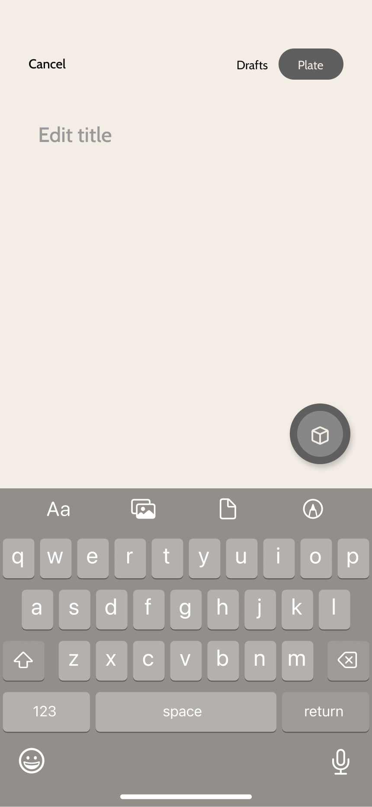
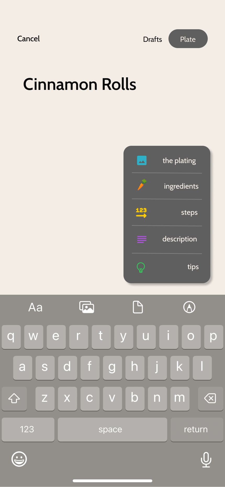

About Me
Projects
Experience
Introducing
Plates
The social platform made for discovering and sharing your favorite recipes.
With a unique
module-based
drafting system,
recipe writing has never become easier.

